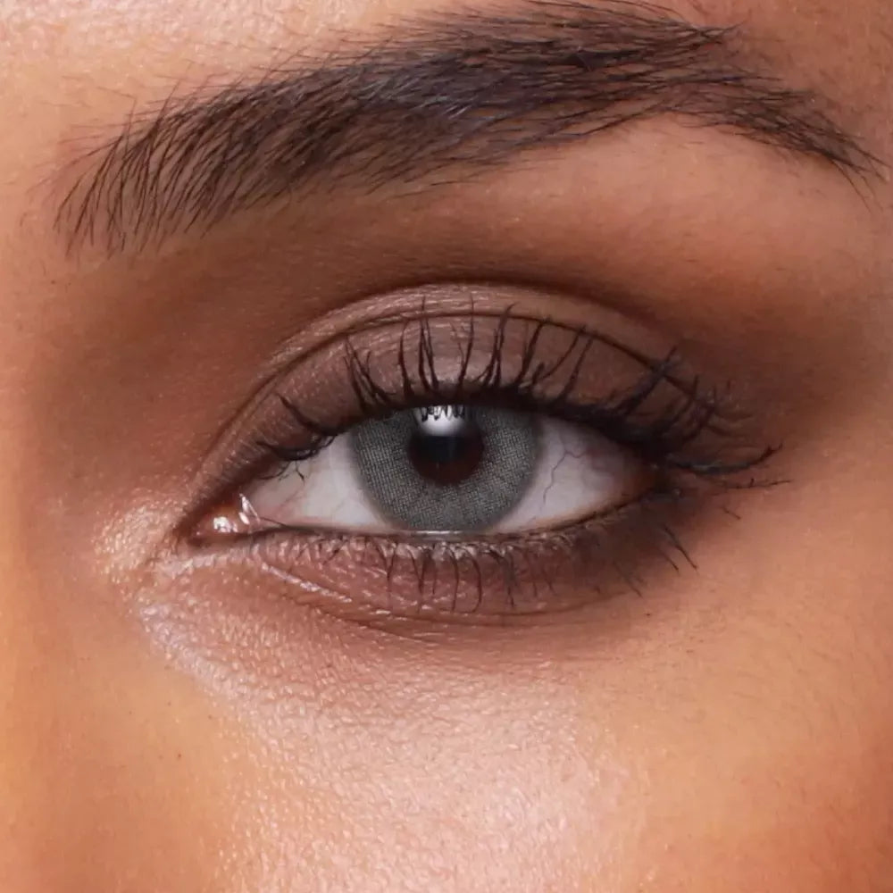
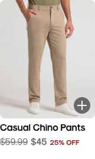

01
Classic circle
A familiar plus with a crisp colour reversal.

SAVE 20%BESTSELLER
Default
Hover / focus
160 ms · invert + lift
White → black. A small lift and “Quick add” tooltip confirm the action.
PERMANENT QUICK ADD · SIX DIRECTIONS
One card. Six ways to invite the next click.
Explore the shape, icon and hover behaviour in context.
01 / ON THE PRODUCT CARD
All six designs are interactive.
Default and hover details sit below each card.
A familiar plus with a crisp colour reversal.

White → black. A small lift and “Quick add” tooltip confirm the action.
A quiet, always-visible dark control.
Charcoal at rest. A fine white halo appears on hover, without moving the icon.
The icon reveals what it does.
The circle grows left into “Quick add”. The plus stays anchored at the right.
A softer square with a boutique feel.
The bag remains upright. Colour reversal and a tooltip communicate quick add.
A recognisable shopping action.
The cart moves just 2px. A tooltip clarifies that product options open first.
The clearest action before hovering.
“Quick add” is always visible. A simple colour reversal adds feedback.
02 / HOW IT SHOULD FEEL
A permanent control should feel ready to use. Motion explains the action; it does not compete with the eye photograph.
It stays compact at rest and explains itself on hover. Compare it with 01 for familiarity, or 06 if clarity on touch screens matters most.
Try the expanding plus ↑Feedback belongs to the control. Moving across the photograph does not animate every quick-add icon.
A subtle pressed state leads to lens options. The icon does not imply the item has already been added.
Every icon stays visible with a 48px touch target. One tap opens the selector; no first tap is wasted revealing a hover.
Focus gets the same visual feedback plus a clear ring. Escape closes the selector and returns focus. Reduced-motion preferences remove the transitions.
03 / THE REFERENCE
In the “Style It With” cards inspected, the quick-add control is a charcoal circle with a white plus. Hover adds subtle ring emphasis; the button does not expand.
Design 02 takes that direction into SWATI’s card, with a larger 48px target and a label on hover. It is an adaptation, not a pixel-for-pixel copy.
View the reference site ↗